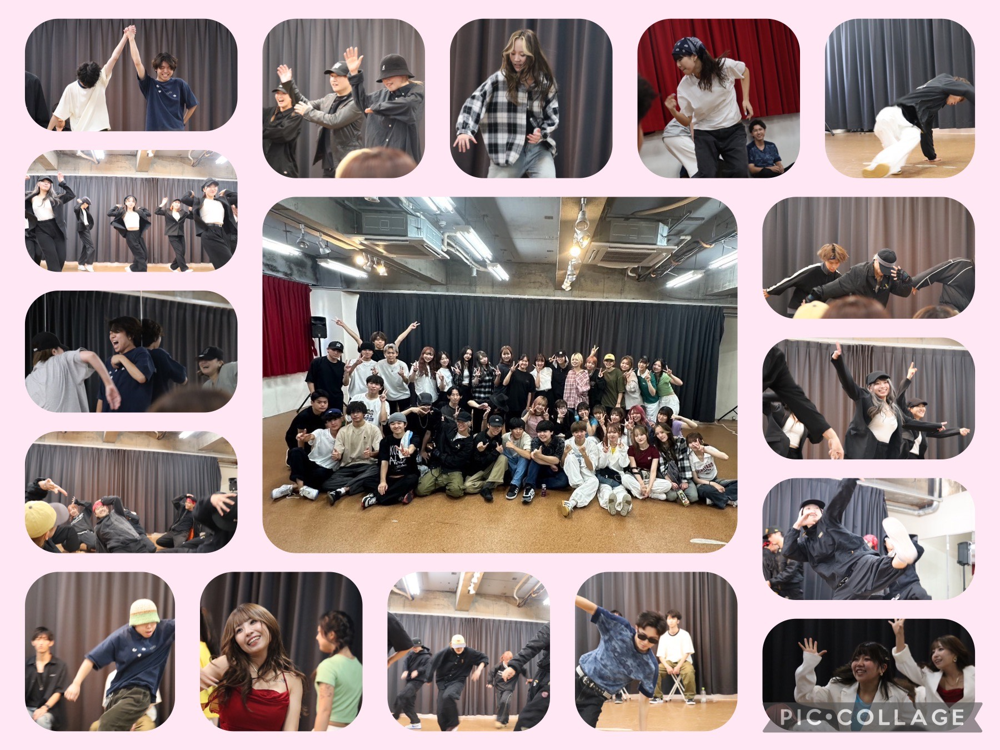
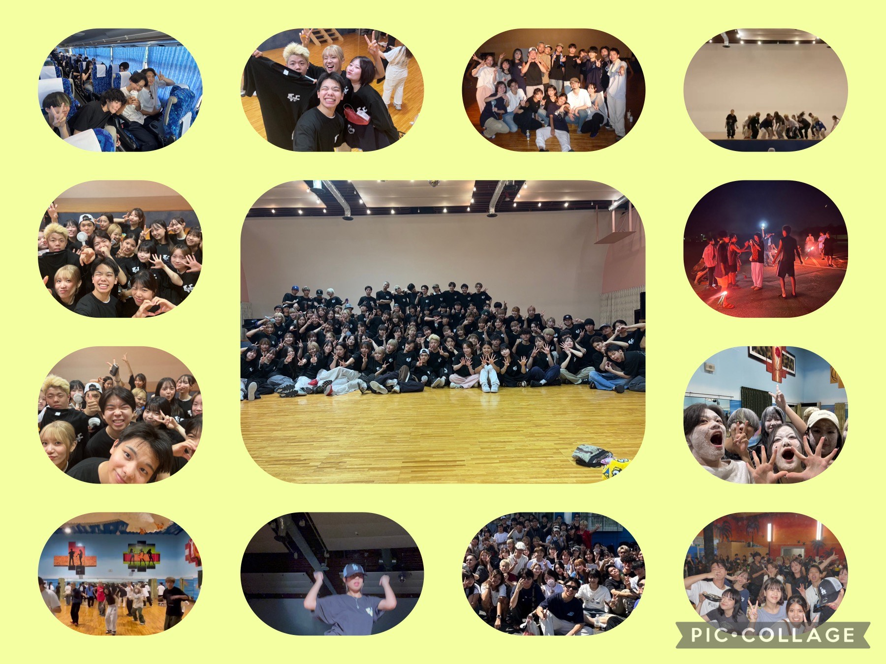

Genre Hiphop(middle,new)/Lock/Pop/House/Break 活動日 火,木or金(ステージ前は週３)18:00～21:00 場所 公民館・スタジオ(東海大学前,本厚木,鶴巻温泉,渋沢)
 フレッシュマンパーティー(FMP) フレッシュマンパーティー通称「フレマン」は、新入生の入部を歓迎するイベントのことです。各ジャンルごとの1年によるショーケース、エキシビションで学年問わずに参加できるトーナメント式のバトルも行い、サークル全体が盛り上がるイベントの一つです。
 合宿 合宿は、春・夏の２回行われます。２泊３日で合宿を行い、夏は建学祭に向けて、春は新歓ステージに向けて、短期間で集中的に振り入れをします。合宿では、練習の他にバトルやレクも行い、ジャンル・学年の垣根を越えて仲良くできる行事でもあります。